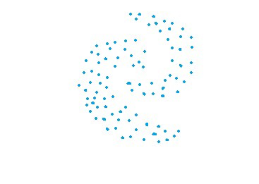
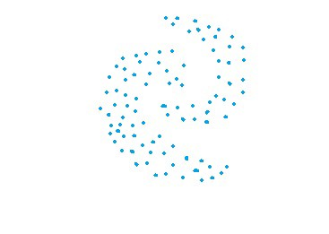

Capítulo 3 Clustering Jerárquico
En esta sección se analizarán diferentes metodologías que tienen como propósito realizar segmentaciones de unidades de manera jerárquica, es decir, a partir de un único grupo se van agrupando o separando los individuos dependiendo de qué tan lejanos o cercanos se encuentran unos de otros. Las principales metodologías a revisar serán:
Liga simple o vecino más cercano
Liga compleja o vecino más lejano
Liga promedio
Liga centroide
Varianza mínima de Ward

 

A partir del concepto de distancia entre puntos en un espacio de N dimensiones (variables), se realiza la agrupación de elementos para posteriormente calcular cuántos grupos es conveniente usar. Este proceso puede ser graficado de múltiples formas, sin embargo, la visualización más usada corresponde al dendograma, el cual es un gráfico como el presentado a continuación:

El eje horizontal representa los puntos de datos.
La altura a lo largo del eje vertical representa la distancia entre los grupos.
Las líneas verticales en el gráfico representan grupos.
La altura de estas líneas representa la distancia desde el grupo más cercano.
Podemos encontrar el número de conglomerados que mejor representan los grupos en los datos usando el dendrograma.

Las líneas verticales con las mayores distancias entre ellas, es decir, la mayor altura en el mismo nivel, dan el número de grupos que mejor representan los datos.
3.1 Cálculo de distancia
Otro parámetro que podemos ajustar para el modelo es la distancia usada, existen diferentes formas de medir qué tan “cerca” están dos puntos entre sí, y las diferencias entre estos métodos pueden volverse significativas en dimensiones superiores.
- La más utilizada es la distancia euclidiana, el tipo estándar de distancia.
\[d(X,Y) = \sqrt{\sum_{i=1}^{n} (x_i-y_i)^2}\]
- Otra métrica es la llamada distancia de Manhattan, que mide la distancia tomada en cada dirección cardinal, en lugar de a lo largo de la diagonal.
\[d(X,Y) = \sum_{i=1}^{n} |x_i - y_i|\]
- De manera más general, las anteriores son casos particulares de la distancia de Minkowski, cuya fórmula es:
\[d(X,Y) = (\sum_{i=1}^{n} |x_i-y_i|^p)^{\frac{1}{p}}\]
- La distancia de coseno es ampliamente en análisis de texto, sistemas de recomendación.
\[d(X,Y)= 1 - \frac{\sum_{i=1}^{n}{X_iY_i}}{\sqrt{\sum_{i=1}^{n}{X_i^2}}\sqrt{\sum_{i=1}^{n}{Y_i^2}}}\]
- La distancia de Jaccard es ampliamente usada para medir similitud cuando se trata de variables categóricas. Es usado en análisis de texto y sistemas de recomendación.
\[d(X, Y) = \frac{X \cap Y}{X \cup Y}\]